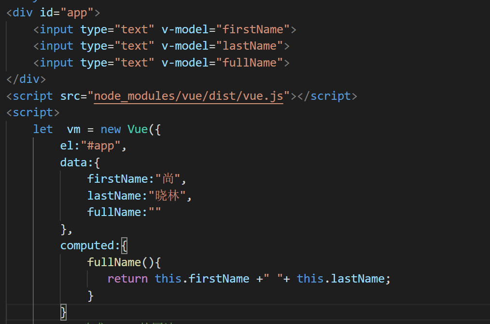
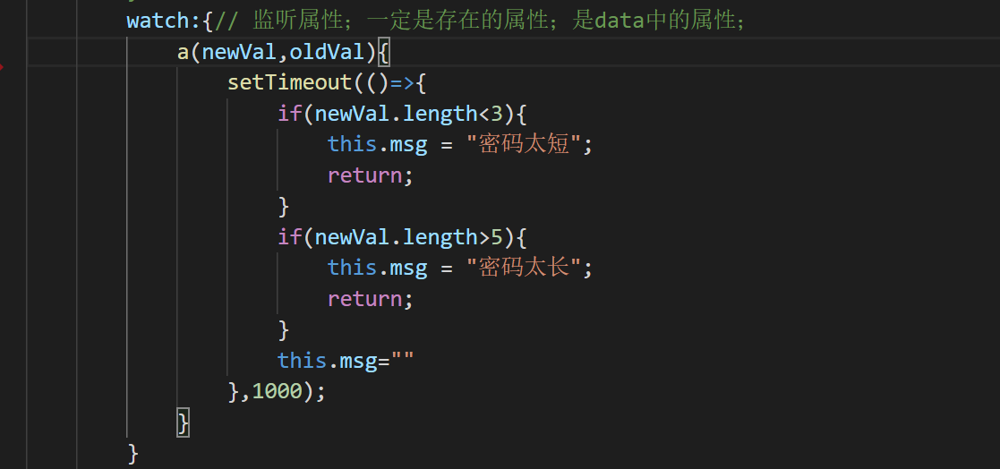
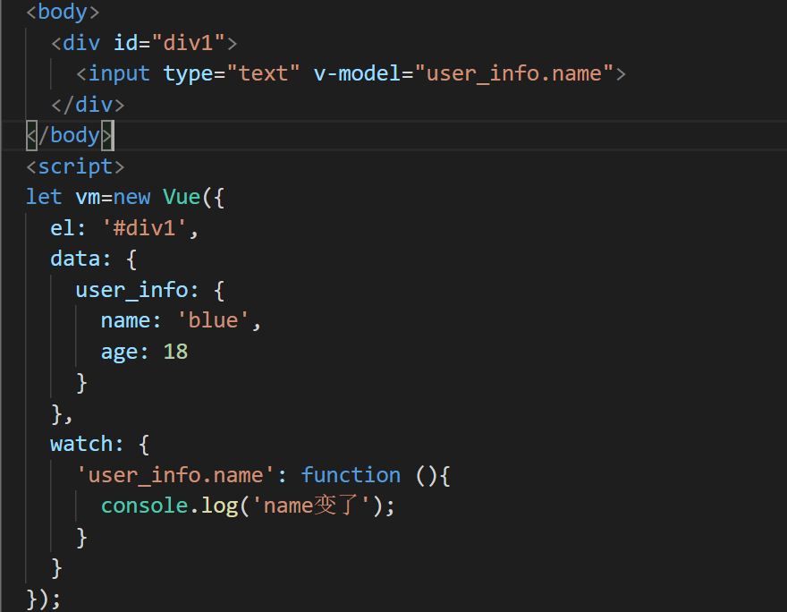

1. 支持缓存，只有依赖数据发生改变，才会重新进行计算
2. 不支持异步，当computed内有异步操作时无效，无法监听数据的变化
3.computed 属性值会默认走缓存，计算属性是基于它们的响应式依赖进行缓存的，也就是基于data中声明过的数据通过计算得到的
4. 如果一个属性是由其他属性计算而来的，这个属性依赖其他属性，是一个多对一或者一对一，一般用computed
5.如果computed属性属性值是函数，那么默认会走get方法；函数的返回值就是属性的属性值；在computed中的，属性都有一个get和一个set方法，当数据变化时，调用set方法。

侦听属性watch：
1. 不支持缓存，数据变，直接会触发相应的操作；
2.watch支持异步；
3.监听的函数接收两个参数，第一个参数是最新的值；第二个参数是输入之前的值；
4. 当一个属性发生变化时，需要执行对应的操作；一对多；

监听的对象也可以写成字符串的形式

当需要在数据变化时执行异步或开销较大的操作时，这个方式是最有用的。这是和computed最大的区别，请勿滥用。嗯，就酱~